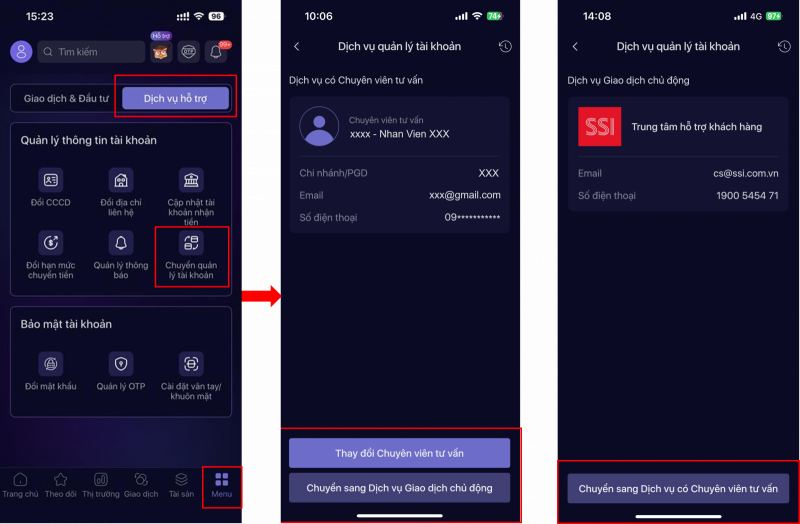

01
Chọn “Chuyển quản lý tài khoản” từ menu Dịch vụ hỗ trợ
Từ màn hình chính, mở tab Menu ở thanh điều hướng dưới cùng. Trong nhóm Dịch vụ hỗ trợ, chọn Chuyển quản lý tài khoản.
- Nếu tài khoản đang có Chuyên viên tư vấn, màn hình sẽ hiển thị thông tin người đang phụ trách.
- Nếu tài khoản đang dùng Dịch vụ Giao dịch chủ động, ứng dụng sẽ hiển thị lựa chọn chuyển sang dịch vụ có Chuyên viên tư vấn.
- Kiểm tra đúng tài khoản trước khi tiếp tục.
